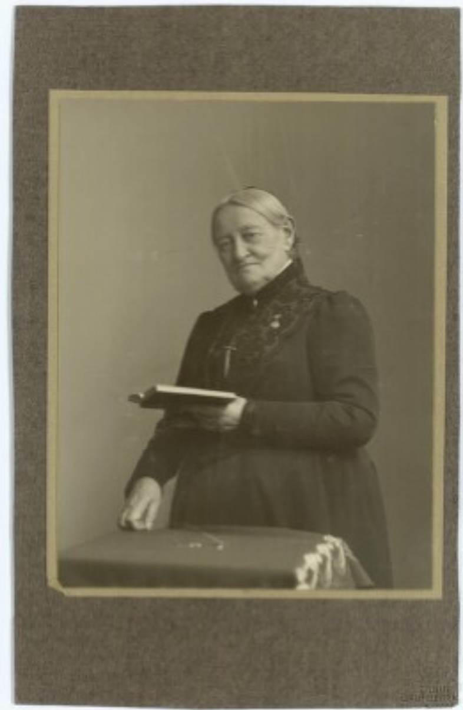
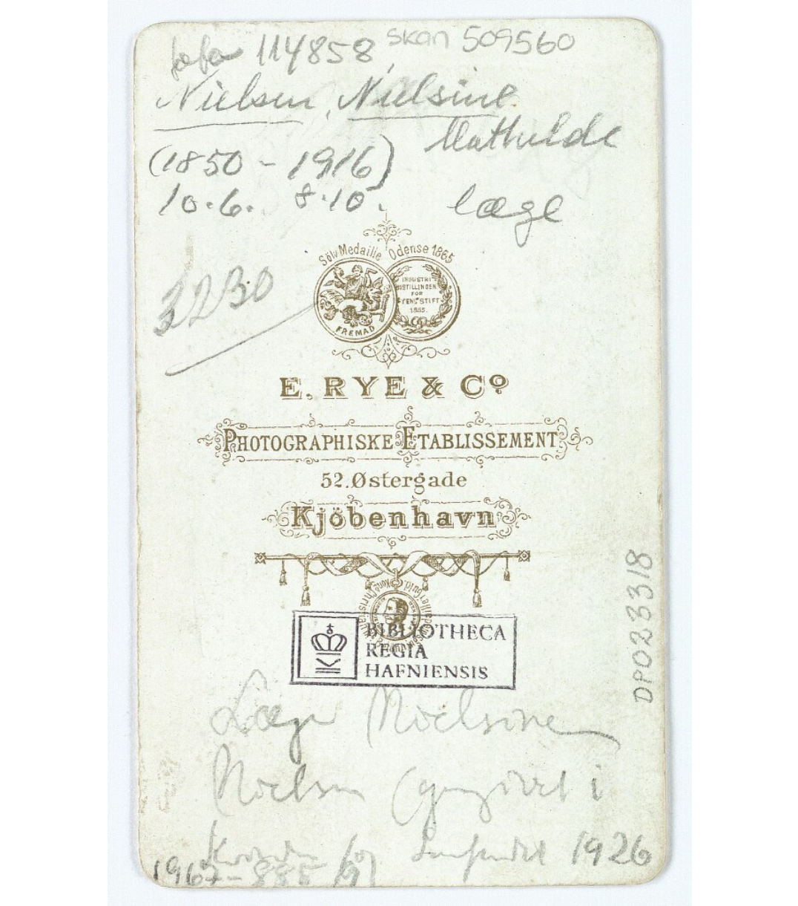

Berømte københavnske kvinder
Grevinde Danner
1815 - 1874
Rhoncus urna neque viverra justo nec ultrices dui sapien eget mi proin sed libero enim sed faucibus turpis in eu mi bibendum neque egestas congue quisque egestas diam in arcu cursus euismod quis viverra nibh cras pulvinar mattis nunc sed blandit libero volutpat sed cras ornare arcu dui vivamus arcu felis bibendum ut tristique et egestas quis ipsum suspendisse ultrices gravida dictum fusce ut.

Natalie Zahle
1827 - 1913
Faucibus nisl tincidunt eget nullam non nisi est sit amet facilisis magna etiam tempor orci eu lobortis elementum nibh tellus molestie nunc non blandit massa enim nec dui nunc mattis enim ut tellus elementum sagittis vitae et leo duis ut diam quam nulla porttitor massa id neque aliquam vestibulum morbi blandit cursus risus at ultrices.
Forkæmper for kvinders ret til uddannelse
Massa tincidunt nunc pulvinar sapien et ligula ullamcorper malesuada proin libero nunc consequat interdum varius sit amet mattis vulputate enim nulla aliquet porttitor lacus luctus accumsan tortor posuere ac ut consequat semper viverra nam libero justo laoreet sit amet cursus sit amet dictum sit amet justo donec enim diam.
Nielsine Nielsen
1850 - 1916
Pretium viverra suspendisse potenti nullam ac tortor vitae purus faucibus ornare suspendisse sed nisi lacus sed viverra tellus in hac habitasse platea dictumst vestibulum rhoncus est pellentesque elit ullamcorper dignissim cras tincidunt lobortis feugiat vivamus at augue eget arcu dictum varius duis at consectetur lorem donec massa sapien faucibus et molestie ac feugiat sed lectus.
